说说 https 的握手过程
参考答案
https的详细握手过程
https在七层协议里面属于应用层，他基于tcp协议，所以，https握手的过程，一定先经过tcp的三次握手，tcp链接建立好之后，才进入https的对称密钥协商过程，对称密钥协商好之后，就开始正常的收发数据流程。
接下来拿实际网络数据包来解释https的整个详细的握手过程
打开wireshark抓包工具，并随手打开命令行，输入了如下一行命令
curl https://www.baidu.com
上面其实涉及到两个问题：
- 为什么是wireshark，而不是fiddler 或者 charles
fiddler 和charles主要是用于抓取应用层协议https/http等上层的应用数据，都是建立链接成功后的数据，而wireshark是可以抓取所有协议的数据包（直接读取网卡数据）,我们的目的是抓取https建立链接成功前的过程，所以我们选择wireshark
- 为什么是用curl， 而不是在浏览器打开https://www.baidu.com
curl是只发送一个请求，如果是用浏览器打开百度，那百度页面里面的各种资源也会发送请求，容易造成很多不必要的数据包
好，重点来了，开始上图：
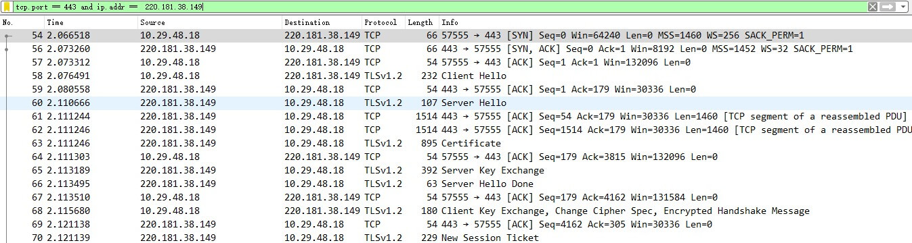
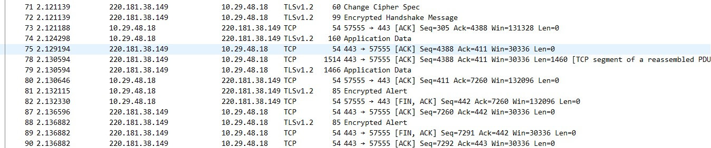
遇到凡事不要慌，接下来待我给你慢慢道来（ack消息属于tcp协议里面的确认报文，不做解释）
第一步
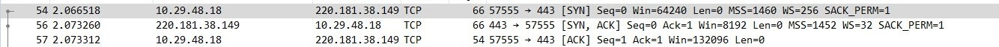
解释说明：tcp三次握手，这个不做解释，如果这块不清楚，比如ack，seq,mss,win都代表什么意思，这个可以在互动区留言，我视情况专门写几篇tcp的文章（这块太大了，没几篇是介绍不完的）
第二步：客户端发送client\_hello
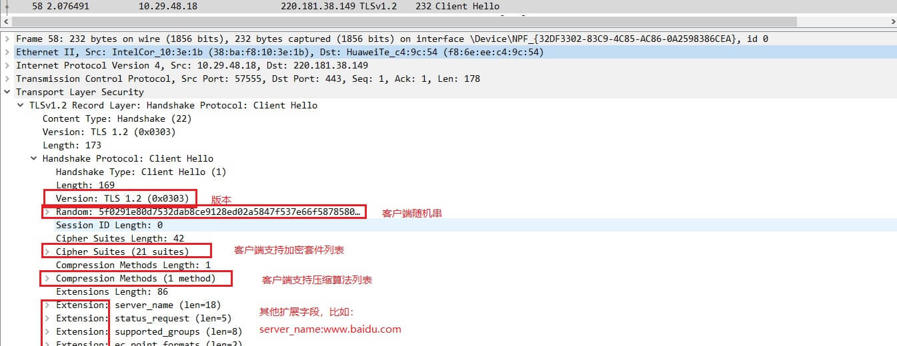
解释说明：客户端发送client\_hello，包含以下内容（请自行对照上图） 1\. 包含TLS版本信息 2\. 随机数（用于后续的密钥协商）random\_C 3\. 加密套件候选列表 4\. 压缩算法候选列表 5\. 扩展字段 6\. 其他
第三步：服务端发送server\_hello
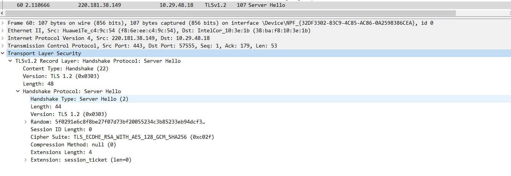
解释说明：服务端收到客户端的client\_hello之后，发送server\_hello，并返回协商的信息结果 1\. 选择使用的TLS协议版本 version 2\. 选择的加密套件 cipher suite 3\. 选择的压缩算法 compression method 4\. 随机数 random\_S 5\. 其他
第四步：服务端发送证书
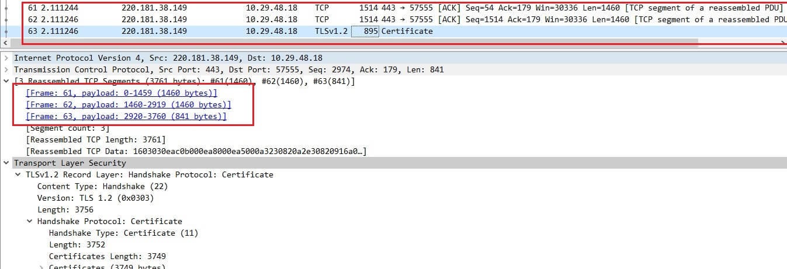
解释说明：服务端发送完server\_hello后，紧接着开始发送自己的证书（不清楚证书是什么的，可以移步到上一篇文章），从图可知：因包含证书的报文长度是3761，所以此报文在tcp这块做了分段，分了3个报文把证书发送完了
问自己： 1\. 分段的标准是什么？ 2\. 什么时候叫分段，什么时候叫分片？ 3\. 什么是MTU，什么是MSS
第五步：服务端发送Server Key Exchange
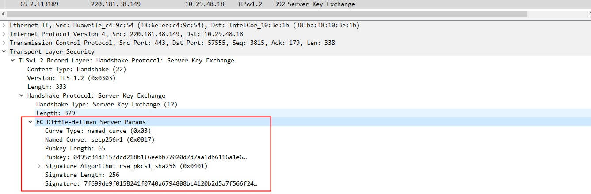
解释说明:对于使用DHE/ECDHE非对称密钥协商算法的SSL握手，将发送该类型握手。RSA算法不会进行该握手流程（DH、ECDH也不会发送server key exchange）,也就是说此报文不一定要发送，视加密算法而定。SSL中的RSA、DHE、ECDHE、ECDH流程与区别可以参考此篇文章
第六步：服务端发送Server Hello Done
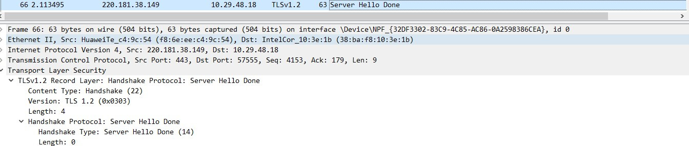
解释说明:通知客户端 server\_hello 信息发送结束
第七步：客户端发送.client\_key\_exchange+change\_cipher\_spec+encrypted\_handshake\_message
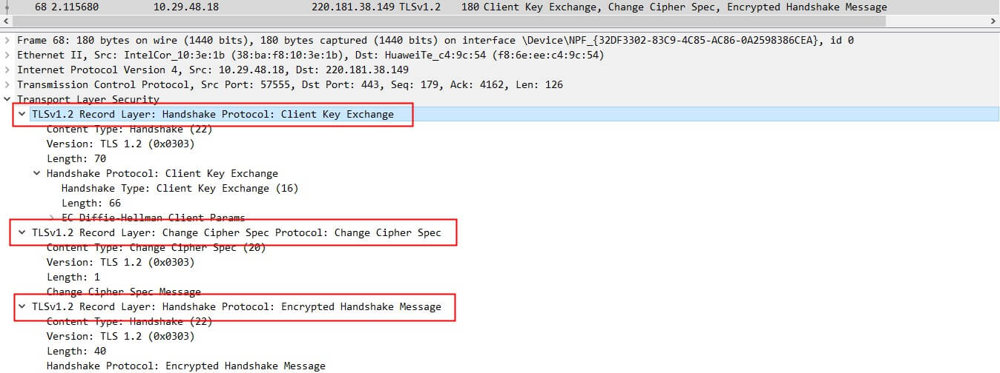
解释说明: 1\. client\_key\_exchange，合法性验证通过之后，向服务器发送自己的公钥参数，这里客户端实际上已经计算出了密钥 2\. change\_cipher\_spec，客户端通知服务器后续的通信都采用协商的通信密钥和加密算法进行加密通信 3\. encrypted\_handshake\_message，主要是用来测试密钥的有效性和一致性
第八步：服务端发送New Session Ticket
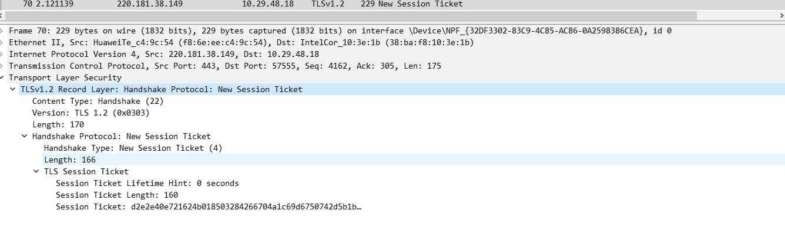
解释说明:服务器给客户端一个会话，用处就是在一段时间之内（超时时间到来之前），双方都以协商的密钥进行通信。
第九步：服务端发送change\_cipher\_spec
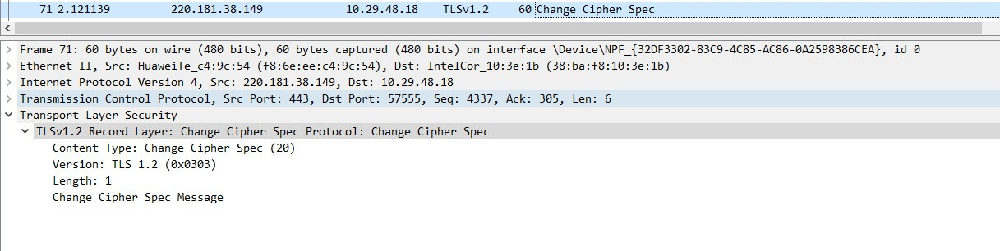
解释说明:服务端解密客户端发送的参数，然后按照同样的算法计算出协商密钥，并通过客户端发送的encrypted\_handshake\_message验证有效性，验证通过，发送该报文，告知客户端，以后可以拿协商的密钥来通信了
第十步：服务端发送encrypted\_handshake\_message
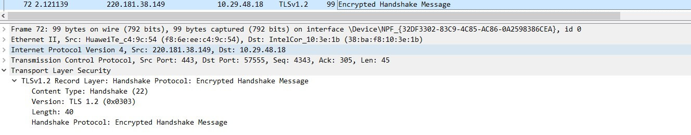
解释说明:目的同样是测试密钥的有效性，客户端发送该报文是为了验证服务端能正常解密，客户端能正常加密，相反：服务端发送该报文是为了验证客户端能正常解密，服务端能正常加密
第十一步：完成密钥协商，开始发送数据
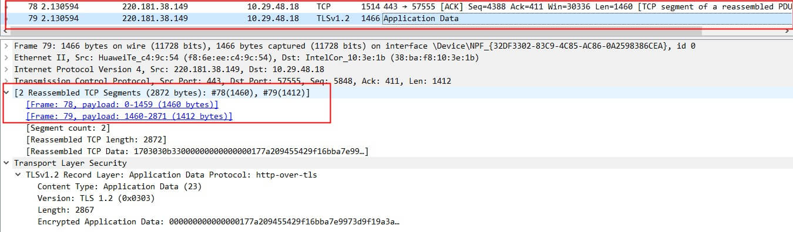
解释说明：数据同样是分段发送的
第十二步：完成数据发送，4次tcp挥手
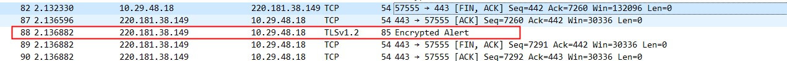
解释说明：红框的意思是：客户端或服务器发送的，意味着加密通信因为某些原因需要中断，警告对方不要再发送敏感的数据,服务端数据发送完成也会有此数据包，可不关注
结语
最后用一张图来说明以下过程
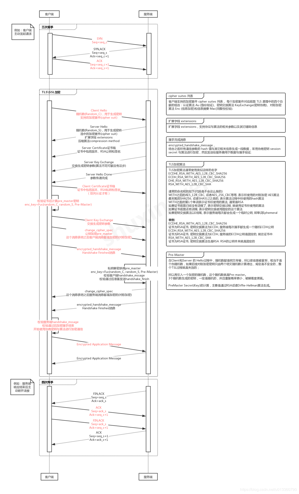
HTTPS的详细握手过程包括以下步骤：
- TCP三次握手：建立一个TCP连接。
- 客户端发送Client Hello：客户端发送包含TLS版本、随机数、加密套件候选列表等信息的数据包。
- 服务端发送Server Hello：服务端收到客户端的Client Hello后，选择一个TLS版本和加密套件，并发送Server Hello响应。
- 服务端发送证书：服务端发送自己的数字证书，证明其身份。
- 服务端发送Server Key Exchange：对于某些加密算法，服务端发送公钥参数。
- 服务端发送Server Hello Done：通知客户端Server Hello信息发送结束。
- 客户端发送Client Key Exchange、Change Cipher Spec、Encrypted Handshake Message：客户端发送公钥参数，通知使用协商的密钥和加密算法，并发送加密的握手消息以测试密钥的有效性。
- 服务端发送New Session Ticket：服务端发送会话票据，用于在超时时间内复用协商的密钥。
- 服务端发送Change Cipher Spec：服务端通知客户端后续通信将使用协商的密钥和加密算法。
- 服务端发送Encrypted Handshake Message：服务端发送加密的握手消息，用于验证客户端和服务端能正常加密和解密。
- 完成密钥协商，开始发送数据：双方使用协商的密钥加密和解密数据。
- 完成数据发送，4次TCP挥手：双方发送结束握手，关闭TCP连接。
整个握手过程确保了安全通信的建立，包括身份验证、密钥协商和加密配置。